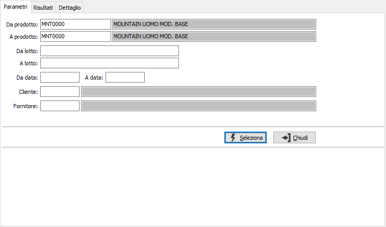
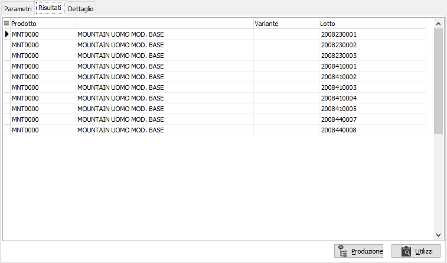
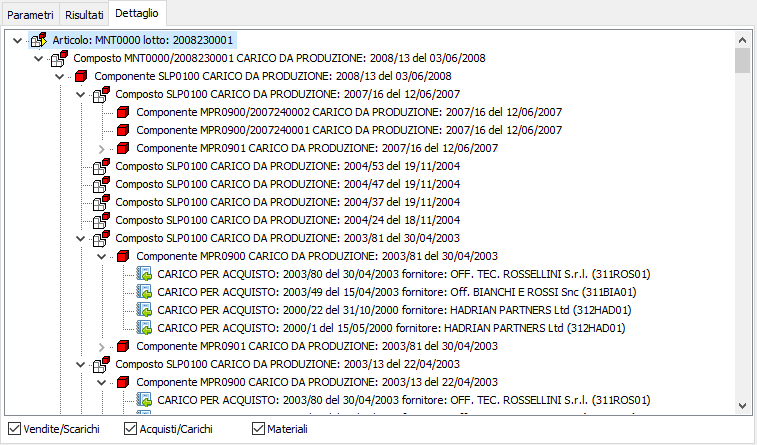
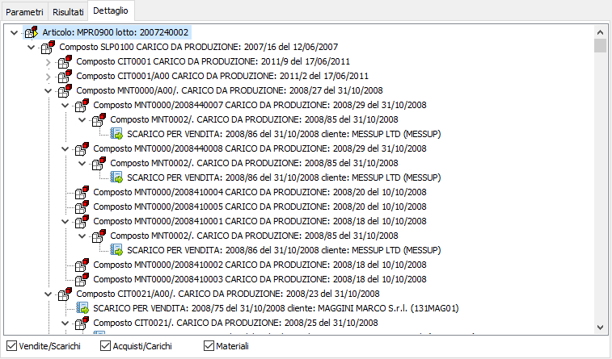

Analisi flussi lotti
Il programma consente di analizzare la movimentazione dei lotti in base ai parametri inseriti dall’utente. Il programma si articola su tre finestre video. La prima, Parametri, consente la definizione dei parametri di analisi.

DA PRODOTTO: codice articolo, da cui si desidera iniziare la selezione di analisi. Confermando a vuoto, la selezione inizia con il primo prodotto valido. Sul campo è attiva la ricerca (F9) sull’anagrafica prodotti.
A PRODOTTO: codice articolo, con cui si desidera terminare la selezione di analisi. Confermando a vuoto, la selezione termina con l’ultimo valido. Sul campo è attiva la ricerca (F9) sull’anagrafica prodotti.
DA LOTTO: codice del lotto, da cui si desidera iniziare la selezione di analisi. Confermando a vuoto, la selezione inizia con il primo prodotto valido. Sul campo è attiva la ricerca (F9) sull’anagrafica prodotti.
A LOTTO: codice del lotto con cui si desidera terminare la selezione di analisi. Confermando a vuoto, la selezione termina con l’ultimo valido. Sul campo è attiva la ricerca (F9) sull’anagrafica prodotti.
DA DATA: data da cui deve iniziare l’analisi per i limiti precedentemente selezionati. Confermando a vuoto, l’analisi inizia con il primo movimento valido.
A DATA: data con cui si desidera terminare l’analisi per i limiti precedentemente selezionati. Confermando a vuoto, l’analisi si conclude con l'ultimo movimento valido.
CLIENTE: codice del cliente a cui si vuole restringere la selezione di analisi. Sul campo è attiva la ricerca (F9) sull’anagrafica clienti.
FORNITORE: codice del fornitore a cui si vuole restringere la selezione di analisi. Sul campo è attiva la ricerca (F9) sull’anagrafica fornitori.
Confermando tramite pressione del bottone Seleziona, viene avviata la selezione e richiamata la finestra video Risultati. La finestra elenca l’articolo o gli articoli con i relativi lotti selezionati; utilizzando i pulsanti Produzione o Utilizzi oppure i relativi tasti funzione oppure il menù attivabile con il tasto destro del mouse con prodotto/lotto si accede alla pagina dei dettagli. Se presente il conto lavoro sarà mostrata anche la colonna Fase.
Il pulsante Produzione, utile per composti, visualizza la "storia" del prodotto/lotto evidenziando i componenti utilizzati con i relativi acquisti/carichi e le vendite/scarichi del prodotto; tutte le selezioni di visualizzazione sono opzionabili. Il pulsante Utilizzi, utile per materie prime e semilavorati, visualizza dove il prodotto/lotto è stato utilizzato a livello di produzione, con i relativi acquisti/carichi e vendite/scarichi sempre opzionabili.

Tramite i check Vendite/Scarichi ed Acquisti/Carichi è possibile escludere (casella vuota) oppure includere (casella con segno di spunta) le relative tipologie di movimento.
Cliccando invece sui bottoni anteprima di stampa o stampa della tool bar, si avviano le relative funzioni di produzione report prima delle quali è possibile decidere se stampare entrambe le sezioni oppure una determinata sezione, ad esempio solo la Produzione.
Nell'esempio sottostante la Produzione di un prodotto/lotto; è possibile selezionare un materiale o un composto e col tasto destro del mouse richiamare il movimento di magazzino, oppure la produzione di un composto o gli utilizzi di un materiale.

Nell'esempio sottostante gli Utilizzi di un materiale/lotto:
